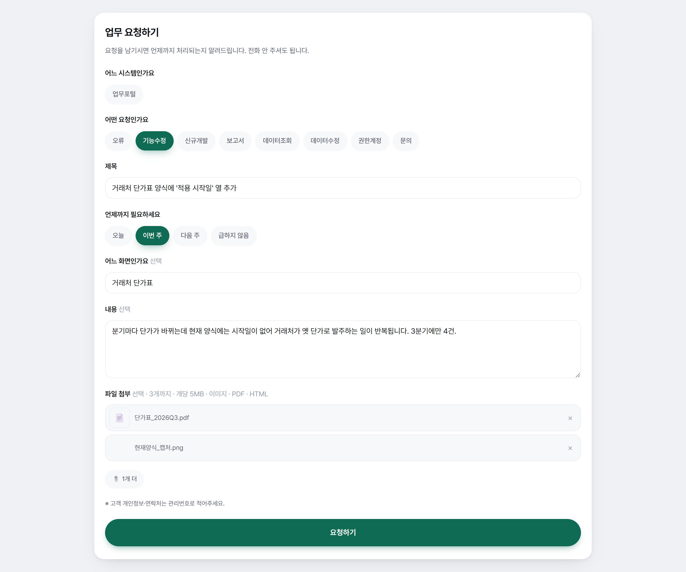

03화면
요청 하나가 돌아오기까지
요청 하나가 들어와 처리되고 요청한 사람에게 돌아가기까지, 화면 일곱 개가 이어집니다.
↓ 아래로 스크롤하면 장면이 화면에 붙고, 스크롤하는 동안 ① → ② → ③이 차례로 강조됩니다.
꼭 필요한 항목을 채워야 보낼 수 있습니다

요청 작성: 필요한 내용은 요청하는 사람이 처음부터 채웁니다.
다음 화면(대리 등록)이 이어지는 자리
요청 하나가 들어와 처리되고 요청한 사람에게 돌아가기까지, 화면 일곱 개가 이어집니다.
↓ 아래로 스크롤하면 장면이 화면에 붙고, 스크롤하는 동안 ① → ② → ③이 차례로 강조됩니다.

요청 작성: 필요한 내용은 요청하는 사람이 처음부터 채웁니다.